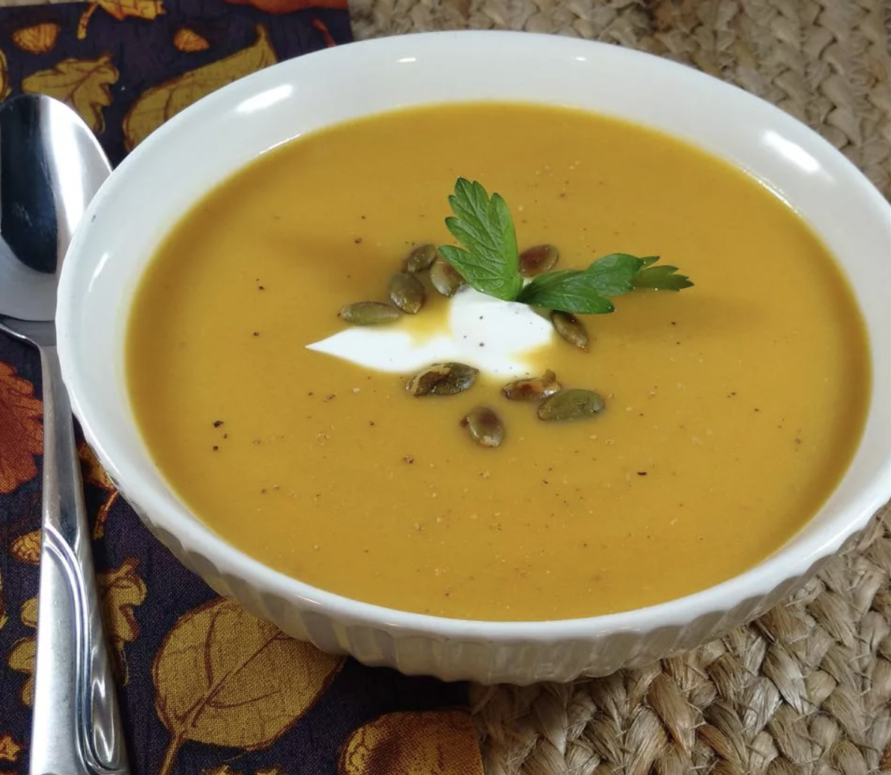

Butternut Squash and Apple Cider Soup

I asked 2 chefs and researched other recipes to come up with the 'perfect' soup. I love the sweet taste of squash and veggies combined with fall cider. Hope you enjoy it too!
Ingredients:
- 2 tbso butter
- 1 onion [diced]
- 1 butternut squah [peeled,seeded,and cut into large chunks]
- 2 white potatoes [peeled and chopped]
- 1 apple [peeled and chopped]
- 1 large carrot [peeled and chopped]
- 2 stalks celery [chopped]
- 2 (14 oz) cans chicken broth
- 1/2 gallon apple cider
- 3/4 cup half-and-half cream
- 1/2 tspn ground cloves
- 1/4 tspn ground cinnamon
- 1/2 cup sour cream [or as needed]
- 1 pinch ground nutmeg [or to taste]
Steps:
- Heat butter in a large pot over medium heat; cook and stir onion in the melted butter until
translucent, 5 to 10 minutes. Add butternut squash, potatoes, apple, carrot, and celery to
onion; pour in chicken broth and enough apple cider to cover vegetables. Bring mixture to
a boil and cover pot. Reduce heat and simmer, adding more apple cider as needed, until
vegetables are tender, 35 to 40 minutes.
- Blend vegetable mixture with an immersion blender until smooth; stir in cream,
cinnamon, and cloves. Simmer until heated through, 5 to 10 minutes. Spoon soup
into serving bowls; top each with about 1 tablespoon sour cream and a pinch of
nutmeg.